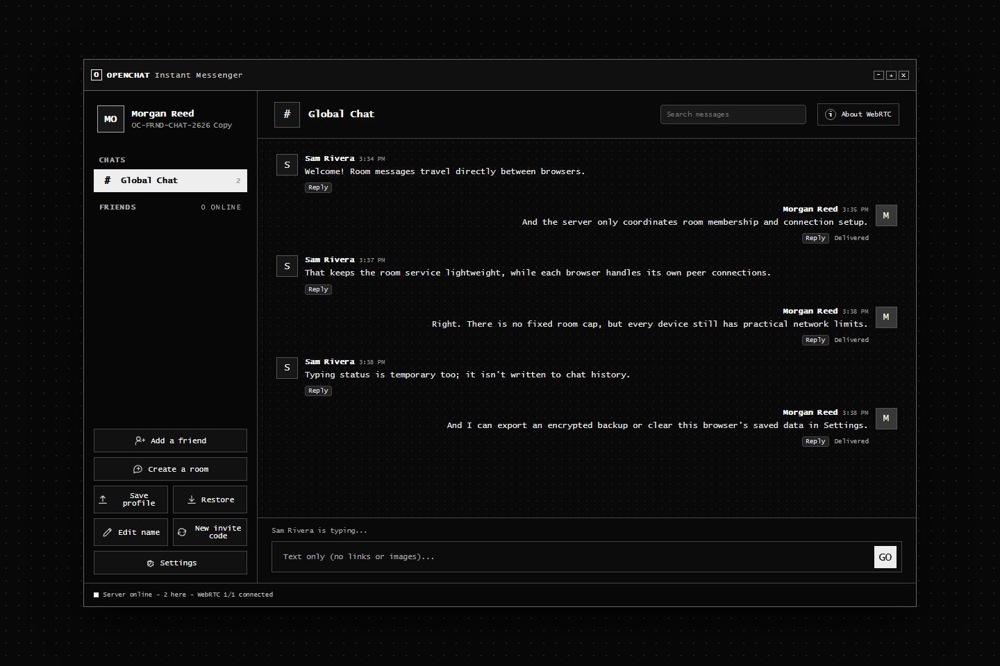
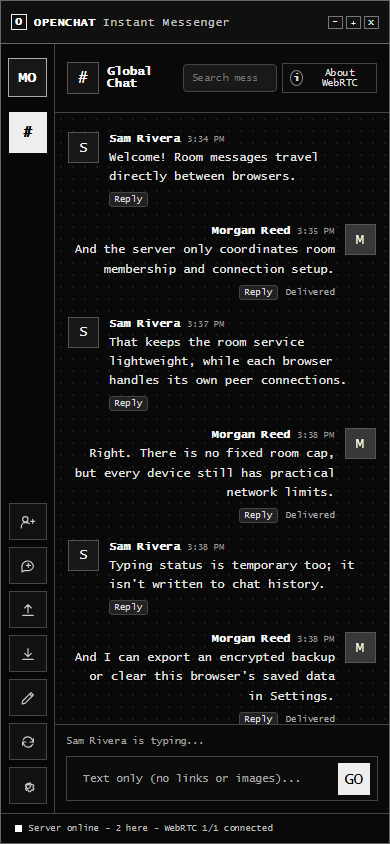
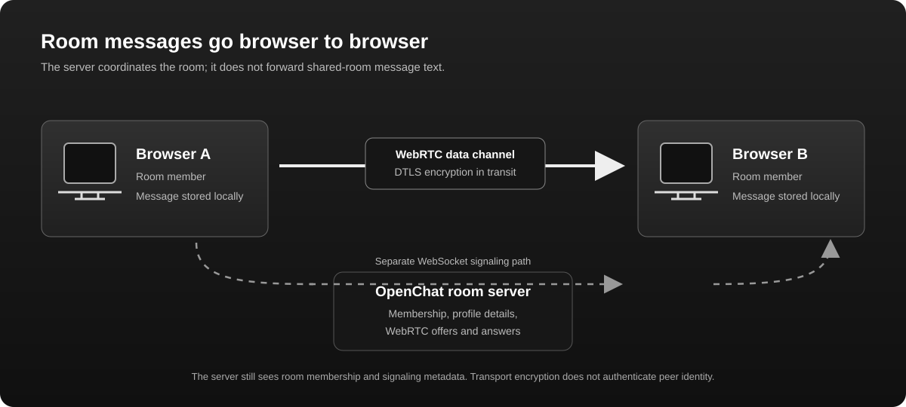
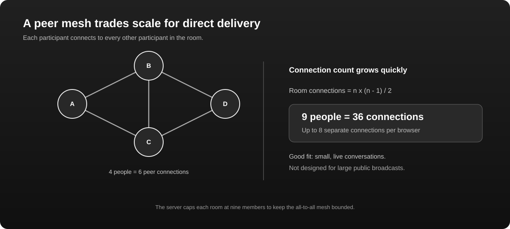

Peer-mesh rooms
Room members establish individual WebRTC data channels. The server handles membership and signaling, not the shared-room message body.
OpenChat is a self-hosted messenger for small communities and close friends. Bring up your own server, create a room, and let browsers connect peer to peer.

The current interface
These captures come from the running app and show the current monochrome interface at desktop and mobile sizes.

Made for conversations
No hosted account system or hidden message relay for room text. You run the room server and can inspect what the current browser app does.
Room members establish individual WebRTC data channels. The server handles membership and signaling, not the shared-room message body.
Connect with friends using exchanged offers and answers. Friend codes help compare details, but are not cryptographic identity proof.
Keep a local profile, contacts, and recent history. Export a password-protected backup encrypted in your browser.
Use /help, /who, /me, and /clear for lightweight IRC-style actions in your current conversation.
Run the small Node.js service yourself. Room names and membership are kept in server memory and reset on restart.
See how messages travel, what metadata the server sees, and which network conditions can prevent a direct connection.
A transparent architecture
The server helps participants find each other and exchange WebRTC setup details. Once connected, browsers send room messages directly over peer data channels.

Designed for small rooms
Each participant maintains a connection to every other participant. Ten people require 45 peer connections across the room, or nine for each browser. There is no fixed participant cap, but actual capacity depends on devices and networks.

Getting started
OpenChat is self-hosted. There is no public account service or shared hosted instance; you run the server and decide how to host it.
Install Node.js 22 or later, install the project dependencies, then run npm start. Keep the process running while people use the room.
Visit /app on your instance and choose a display name. Your profile and recent history stay in this browser's local storage.
Join Global Chat, create a room, or exchange a friend code and connection details with someone you know.
For mobile browsers and internet hosting, follow the setup guide. A reachable HTTPS address is required for many browser features. Room chat also depends on the signaling server staying available. The server does not currently enforce room permissions.
Transport, without the hype
OpenChat currently uses WebRTC over IP networks for peer connections. A room server is still required for discovery and signaling. WebRTC may use a local Wi-Fi path when peers can reach one another, but OpenChat does not implement Wi-Fi Direct, hotspot discovery, or standalone Wi-Fi mesh.
Bluetooth LE mesh, multi-hop offline relaying, Nostr relay channels, location-based channels, and encrypted store-and-forward are not implemented in this browser app. Browser Bluetooth APIs cannot provide the background BLE mesh behavior of a native app.
Read the fine print
WebRTC protects data in transit, but OpenChat has no cryptographically authenticated identity protocol. Local browser history is not encrypted at rest. Review the security notes before using it, especially for sensitive conversations.